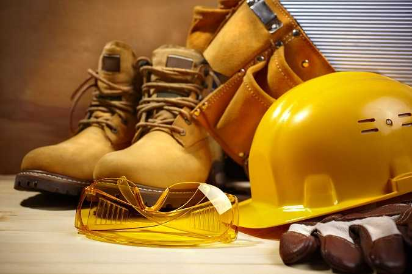

Seguridad
Uno de los puntos importantes de la actividad minera actual es la seguridad de los trabajadores, que ha logrado una consideración fundamental en las legislaciones nacionales a partir de graves accidentes ocurridos especialmente en el siglo xx. Uno de los más terribles fue la catástrofe de Courrières, ocurrido en el norte de Francia el 10 de marzo de 1906, en donde murieron 1099 mineros y que es considerado como el peor desastre minero de Europa. Posteriormente fue superado por el accidente de la mina de carbón de Benxihu en China, acontecido el 26 de abril de 1942 y que provocó la muerte de 1549 mineros.A pesar de que la seguridad en la minería es sustancialmente superior a décadas pasadas, aún sigue habiendo desastres a nivel mundial. De acuerdo a datos del gobierno chino, cerca de 5000 personas mueren en accidentes cada año, mientras que otros informes han sugerido que la cifra incluso supera las 20 000 muertes.Este tipo de eventualidades ocurren actualmente en varias partes del mundo, pero solo algunos producen una cifra considerable de fallecidos. Dentro de los accidentes acontecidos en los últimos años destaca el desastre de 2007 en la mina Ulyanovskaya de Rusia (108 fallecidos), la explosión en la mina Heilongjiang de China en 2009 (108 fallecidos) y el accidente en la mina Upper Big Branch de los Estados Unidos en 2010 (31 fallecidos).
La gran mayoría de los accidentes fatales suceden en las minas subterráneas, por ello la ventilación de las mismas es un problema importante para muchas compañías. La mala ventilación de la mina hace que la exposición a gases nocivos, calor y polvo produzcan lesiones, enfermedades profesionales e incluso la muerte. La concentración de metano y otros contaminantes en el aire debajo de la tierra, se pueden controlar mediante la disolución (ventilación), capturarla antes de ingresar (drenaje) o por el aislamiento (sellos o stopping).El mal control de los gases nocivos o niveles altos de polvo de roca, de carbón o de silicio pueden producir asfixia y enfermedades a largo plazo como silicosis, asbestosis y neumoconiosis (conocido de manera coloquial en la minería del carbón como la enfermedad del pulmón negro)